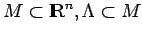
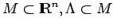
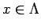
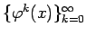
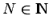
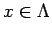
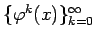
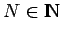
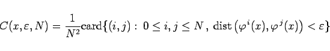
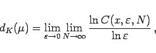

Inhalt Index DeskTop Bronstein

 Dynamische Systeme und Chaos Quantitative Beschreibung von Attraktoren Dimensionen Auf invariante Maße zurückgehende Dimensionen
Dynamische Systeme und Chaos Quantitative Beschreibung von Attraktoren Dimensionen Auf invariante Maße zurückgehende Dimensionen


Es seien  ein zeitdiskretes dynamisches System auf  ein Attraktor und
ein zeitdiskretes dynamisches System auf  ein Attraktor und  ein auf
ein auf  konzentriertes invariantes Wahrscheinlichkeitsmaß. Für  wird der Semiorbit  betrachtet. Sind  und
konzentriertes invariantes Wahrscheinlichkeitsmaß. Für  wird der Semiorbit  betrachtet. Sind  und  beliebig, so heißt
beliebig, so heißt
|  | (17.46a) |
Nach dem Satz von PESIN-TEMPELMAN existiert, falls  ergodisch ist, für
ergodisch ist, für  fast alle der Grenzwert
fast alle der Grenzwert
|  | (17.46b) |
der Korrelationsdimension von  genannt wird.
genannt wird.